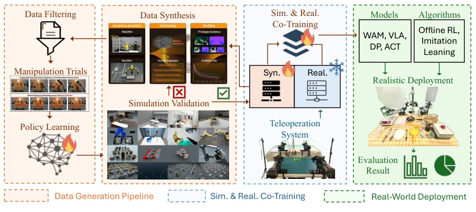
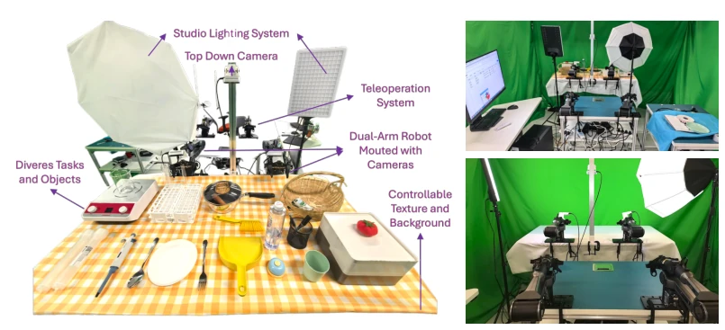
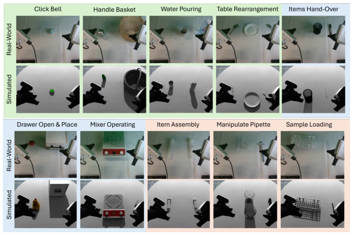
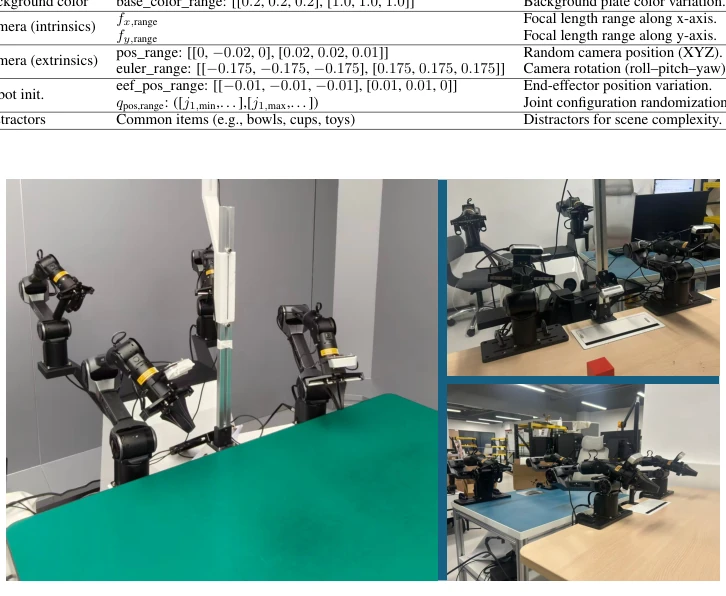

This RoboSynChallenge served as both a reality check and a stepping stone for the embodied AI community. While the community frequently advocates for "general-purpose robots," data collection still relies on manual effort, and the Sim2Real gap remains as deep as the Mariana Trench. This competition avoided empty promises, directly adopting a hybrid strategy of synthetic data generation and real-world evaluation. Although the baseline models remain the familiar Transformer and Diffusion architectures, the courage to prioritize synthetic data for primary training and validate on actual hardware is commendable. However, do not expect that winning the championship enables immediate factory deployment; after all, with 60 real samples compared to 1,000 synthetic samples, does this ratio not suggest an overemphasis on the virtual at the expense of the real? Moreover, although dual-arm manipulation is advanced, if the system fails upon changing the table, the label "general-purpose" must be questioned. In summary, this is a promising track, but synthetic data should not be treated as a panacea; the noise of the real world remains the ultimate challenge.
The core pain point of embodied intelligence lies in data. Real-world data collection is costly, slow, and limited by specific hardware [5]. Existing benchmarks are either purely simulated [11, 12, 13] or purely real [15, 16], lacking unified Sim2Real evaluation standards. Although simulation environments can expand data [19, 20, 21, 22], mismatches in dynamics and perception lead to performance degradation [14, 23, 24]. Most benchmarks rely on fixed datasets and cannot test generalization capabilities for unseen objects and environments. RoboSynChallenge aims to fill this gap, quantify how synthetic data improves policy generalization under real scarce data, establish a standardized Sim2Real transfer benchmark, and promote the leap from single-modality to multi-modality evaluation.
The overall process is divided into three major stages: data generation, policy learning, and real deployment evaluation. The core is the EmbodiChain [25] framework, which integrates high-performance simulation and automated data pipelines. First, the data generation stage utilizes generative simulation environments, generating assets through multi-objective optimization to ensure geometric fidelity and physical plausibility, followed by gradient-based layout synthesis of scenes. Second, the data expansion stage generates trajectories through reachability-aware sampling, with a closed-loop error recovery module detecting failures and replanning to enhance trajectory diversity. Third, the online data stream mechanism streams simulated experiences in real-time, with a visual augmentation module perturbing lighting and textures to alleviate overfitting. The evaluation platform adopts dual-arm robots (AgileX Piper), with tasks divided into three levels: beginner, intermediate, and advanced, covering rigid body, joint, and tool manipulation. Training adopts Sim & Real Co-Training, with synthetic data as the main component and a small amount of teleoperated real data as auxiliary. Baselines include ACT [3], Diffusion Policy [4], π0 [32], π0.5 [33], Motus [7], covering imitation learning, generative action prediction, and world models.

Figure 1: The pipeline of RoboSynChallenge, which provides a comprehensive data generation framework for synthesizing manipulation trials within a simulated environment (in orange back- ground), thereby expanding the training datasets. These synthetic data, together with a smaller amount of static real-world data collected through teleoperation (in blue background), can be used for simulation-to-real co-training. This approach helps mitigate the limitations of scarce real data when deploying trained manipulation policies in the real world (in green background).

Figure 2: Real-world manipulation setup: The physical platform consists of a dual-arm robot, cameras, lighting, and various objects, enabling evaluation of all tasks included in the benchmark. To facilitate multiple rounds of real-world testing in a reliable and efficient manner, we have prepared three sets of backup workstations, each configured identically to the primary setup (Figure 4).

Figure 3: Visualizations of the realistic environments (upper row) and their corresponding simulated environments (lower row) across the three task categories: entry-level (green background), mid-level (blue background), and high-level (red background).
The dataset contains 1,000 synthetic trials/task and 60 real samples/task. Evaluation metrics include Success Rate (SR), inference time, and action steps. Table 2 shows that models trained on synthetic data (e.g., Motus sim) perform comparably to real-data training in real deployment, and even outperform real-data training in some tasks (e.g., Click Bell). This proves that the quality of synthetic data is sufficient to support Sim2Real transfer. The test environment includes variations in background, lighting, objects, distractors, and spatial positions to ensure OOD generalization evaluation. Additionally, three sets of backup workstations are provided to ensure the reliability of evaluation and prevent hardware failures from affecting results.

Figure 4: The demonstration showcases our backup hardware, which shares the same robot configu- rations and setup. This ensures that real-world evaluations can be conducted reliably and at scale.